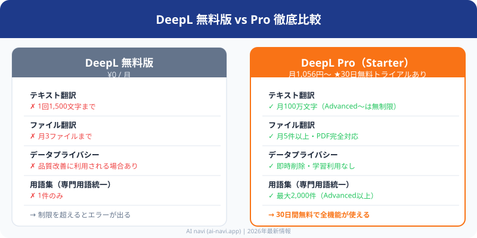

DeepL Pro 評判・料金を徹底レビュー｜無料版との違い・値上げ情報も解説【2026年最新】
公開日: 2026年7月4日 | 最終更新: 2026年9月2日

DeepL Proは買う価値ある？結論（30秒でわかる）
- ✅ 買う価値あり：週3回以上翻訳する人・機密文書を扱う人・API Free廃止で困っている人
- ❌ 無料版で十分：月数回の短文翻訳だけの人・データプライバシーを気にしない人
- DeepL Pro Starterは月1,056円（年払い）で文字数無制限・PDF翻訳・データ即時削除に対応。値上げ後もコスパは良い
- 翻訳精度はGoogle翻訳より上。特にビジネス文書・契約書・論文の自然さで差が出る（DeepL vs Google翻訳の精度比較はこちら）
- 月に5回以上「上限に達しました」が出るならPro移行がコスパ良い（上限エラーの解決法はこちら）
- API Free廃止の影響：無料APIは2024年に終了。開発用途ではPro（API付き）が必須に

「DeepL Proの評判は実際どうなの？」「無料版との違いやメリットは？」——そんな疑問を持つ方のために、DeepL Proの料金プラン・無料版との機能差・翻訳精度・口コミまで徹底的に解説します。
結論から言うと、DeepL Proのメリットは「文字数無制限」「PDF翻訳対応」「データ即時削除によるセキュリティ強化」の3点に集約されます。日常的に英語文書を読み書きする人・仕事で翻訳の質を求める人にとって費用対効果の高いツールです。一方、月に数回程度ならば無料版で十分なケースも多い。DeepLの評判と実際の使用感をもとに、あなたに合ったプランを明確にします。
DeepL Proを30日間無料で試す
「1,500文字じゃ足りない」「PDFも翻訳したい」「機密文書を安全に翻訳したい」——
月額1,056円（年払い）〜で文字数無制限・PDF翻訳・データ即時削除。30日間無料トライアル実施中。
DeepLとは？

DeepLは2017年にドイツのケルンで創業されたDeepL SE（旧Linguee GmbH）が開発したAI翻訳サービスです。ニューラルネットワークを活用した機械翻訳（NMT）の中でも特に「文脈の理解」と「自然な表現」に強みを持ち、公開直後から世界中のプロ翻訳者・研究者・ビジネスパーソンの間で話題となりました。
DeepLが選ばれる理由
従来の翻訳ツールは単語ごとの置き換えに近い直訳になりがちでしたが、DeepLは文全体の意味・トーン・文脈を読み取り、ネイティブに近い自然な表現を出力します。たとえば「It's raining cats and dogs.」のような慣用表現も、ただ直訳するのではなく「土砂降りだ」と意訳できるレベルです。
2026年現在、DeepLは33言語以上に対応し、日本語・英語・ドイツ語・フランス語・スペイン語・中国語など主要言語での翻訳精度は業界トップクラスと評価されています。無料版から利用を始められるため、まず試してから課金判断できる点も人気の理由です。
無料版とProの違い・比較表
DeepLには「無料版（Free）」と「Pro版」があります。まず最も気になる機能差を一覧で確認しましょう。
| 機能・項目 | 無料版 | Pro（Starter〜） |
|---|---|---|
| 1回の文字数上限 | 1,500文字 | 無制限 |
| ファイル翻訳（Word/PPT等） | 月3件まで | 大幅拡張（プランにより異なる） |
| PDFファイル翻訳 | 非対応 | 対応 |
| 用語集（グロッサリー） | 最大1件 | 複数件〜無制限 |
| 翻訳データの学習利用 | あり（品質改善目的） | なし（即時削除） |
| DeepLアプリ（PC版） | 利用可 | 利用可 |
| 文体・丁寧さの変更 | 一部のみ | 全言語で利用可 |
| チームプラン・複数シート | 非対応 | 対応（Advancedから） |
| API利用 | Developer（累計100万文字・評価用） | Growth（月額＋従量課金・本番用） |
| 利用端末数 | 制限なし（個人利用） | 制限なし / チーム共有可（Advancedから） |
| 月額料金 | 0円 | 約1,056円〜（Starter年払い） |
| サポート | メールのみ | 優先サポート |
最大の違いは「データの取り扱い」と「文字数・ファイル制限」の2点です。無料版では入力テキストが品質改善のために利用される場合があるため、機密情報・個人情報が含まれる文書の翻訳にはProプランが必須となります。
DeepL無料版の上限と制限｜どこまで無料で使える？
「DeepL 無料版の上限はどこまで？」「DeepL翻訳 無料 制限」について知りたい方のために、無料版の制約をわかりやすく整理します。DeepLは無料でもアカウント登録なしですぐ使えますが、以下の制限があります。
無料版の制限まとめ: 1,500文字/回・ファイル月3件・用語集1件・PDF非対応・データ学習あり。「仕事で毎日翻訳する」「PDFを翻訳したい」「機密情報を扱う」のいずれかに当てはまる場合はProプランへのアップグレードを推奨します。
無料版の制限について詳しくはDeepL「上限に達しました」の解除方法をご覧ください。
DeepL Pro 4プランの料金を完全比較【2026年8月最新】
DeepL Proは無料版・Starter・Advanced・Ultimateの4段階に分かれています。年払いを選ぶと月あたりの費用を15〜20%抑えられます（以下は2026年8月時点の税込目安）。
| プラン | 月払い | 年払い（月換算） | 翻訳文字数/月 | ファイル翻訳 | 用語集 | PDF対応 |
|---|---|---|---|---|---|---|
| 無料版 | 0円 | — | 1,500文字/回（Web） API: Developer 累計100万文字 |
月3件 | 1件 | × |
| Starter | 約1,375円 | 約1,056円 | 100万文字 | 月5件 | 1件 | ○ |
| Advanced おすすめ | 約4,633円 | 約3,564円 | 無制限 | 月20件 | 2,000件 | ○ |
| Ultimate | 約9,900円 | 約7,700円 | 無制限 | 無制限 | 2,000件 | ○ |
※価格はDeepL公式サイトの表示に基づきます。為替レートやキャンペーンにより変動する場合があります。必ずDeepL公式サイトで最新料金をご確認ください。
DeepL Proの値上げ履歴と今後の見通し【2026年最新】
「DeepL 値上げ」と検索する方が増えています。DeepL Proは過去に複数回の料金改定（値上げ）を行っており、特に円安の影響もあり日本円での実質負担額は上昇傾向にあります。
2024年前半にプラン体系を大幅再編し、従来のPro単一プランからStarter／Advanced／Ultimateの3段階制に移行。それに伴い一部ユーザーの実質負担が増加しました。2024年後半にはDeepL API Freeプランの新規申込を終了（既存ユーザーは一部継続可）。2025〜2026年にかけては円安（1ドル＝145〜155円前後）の影響でユーロ建て請求の日本円換算額がさらに上昇。2026年8月時点のStarterプランは年払い月換算で約1,056円（税込）となっており、年払いを選択することで月払いより約15〜20%の節約が可能です。
- 2024年：Starterプランが新設され、従来のProプランが3段階（Starter/Advanced/Ultimate）に再編
- 2025年〜2026年：為替変動（1ドル=140〜155円）により、日本円での請求額が変動。実質的な値上げとなったユーザーも多い
今後も円安傾向が続く場合、さらに実質負担が増える可能性があります。年払いを選択することで月払いより15〜20%安く固定できるため、長期利用を予定している方は年払いがおすすめです。最新の料金は必ずDeepL公式サイトでご確認ください。
各プランの特徴と選び方
Starter（スターター）：月額約1,056円〜（年払い）
無料版の文字数制限・ファイル制限を解除したい個人向けの入門プランです。PDFファイルの翻訳に対応し、データの即時削除も保証されます。翻訳文字数は月100万文字と上限があるため、大量翻訳を行う場合はAdvancedを検討してください。
Advanced（アドバンスト）：月額約3,564円〜（年払い）
ビジネス利用に最適なプランで、翻訳文字数が無制限になります。用語集を最大2,000件登録でき、ファイル翻訳も月20件まで可能です。フリーランス翻訳者・ライター・海外営業担当者など、日常的に翻訳する方に最もコスパが高いプランとして人気です。
Ultimate（アルティメット）：月額約7,700円〜（年払い）
ファイル翻訳が無制限になる最上位プランです。企業・チームで大量のPDF・Wordファイルを翻訳する用途や、複数人でDeepLを共有利用したい組織向けです。
料金の選び方まとめ: 個人で試したいなら無料版 → PDFも翻訳したいならStarter → 仕事でガッツリ使うならAdvanced → チーム・大量翻訳ならUltimate
筆者の実体験：DeepL Proを6ヶ月使った感想
筆者はフリーランスとして海外クライアントとのやり取りにDeepL Proを約6ヶ月間使用しています。無料版では月末になると文字数制限に引っかかることが多く、特に契約書やNDA（秘密保持契約）の翻訳では途中で制限に達してしまうストレスがありました。
Pro版に移行してからは、ファイル丸ごと翻訳機能でPDFの契約書をそのまま翻訳できるようになり、作業時間が約70%短縮されました。特に用語集（グロッサリー）機能が便利で、業界特有の専門用語を登録しておくと翻訳の一貫性が保たれます。
一方、日本語→英語の翻訳では稀に不自然な表現が出ることがあり、最終チェックは必ず行っています。Google翻訳と比べると、特にビジネス文書の自然さでDeepLが圧倒的に優れていると感じます。（DeepL vs Google翻訳の精度比較を詳しく見る）
DeepL Proの評判・口コミ（ポジティブ・ネガティブ両方）
DeepL Proの評判は国内外で非常に高く、特に翻訳精度の自然さとProのメリット（文字数無制限・PDF対応・セキュリティ）が口コミで評価されています。ここではTwitter・Reddit・各種レビューサイトを参考に、実際のユーザー声を紹介します。
ポジティブな口コミ・評判（3件）
「英語の契約書をDeepL Proで翻訳すると、弁護士に見せられるレベルの日本語になる。以前はGoogle翻訳と手動修正で1時間かかっていた作業が15分で終わる。Proプランは月3,564円だけど、時間コストを考えれば全然安い。」
「製品名や専門用語を用語集に登録してからは、メンバー全員の翻訳が統一された。以前は人によって訳が違って修正が大変だったけど、今はDeepLが一貫した翻訳を出してくれる。Advancedで2,000件登録できるのが本当に助かる。」
「Proプランはデータが即時削除されるので、NDAや社内秘文書の翻訳にも使える。無料版は学習データに使われるリスクがあるので、ビジネス用途では絶対Pro一択。月1,000円台のStarterでも十分セキュリティ要件を満たす。」
ネガティブな口コミ・評判（2件）
「取引先にタイ・インドネシアが増えてきたけど、DeepLは両言語に非対応。ヨーロッパ言語は最高なのに、アジアの主要言語が揃っていないのが痛い。結局Google翻訳を使い分けることになる。早急な対応言語拡充を期待したい。」
「節約のために年払いにしたが、就活が終わって使う機会が減ったので解約したら残り8ヶ月分は返金なし。月払いのほうが柔軟だった。年払いで約12,672円一括払いのリスクを知らずに契約したのが失敗。最初は月払いで試すべきだった。」
ビジネスシーンでの実際の活用例
総合評価として、DeepLはビジネス・学術・ライティング用途での翻訳精度と使い勝手において非常に高い評判を維持しています。対応言語の少なさという弱点はあるものの、日本語を含む主要言語を使うユーザーにとっては実質的なデメリットにはなりにくい状況です。
DeepL Proの登録方法（5分で完了）
DeepL Proへの登録はわずか5分・4ステップで完了します。30日間の無料トライアルがあるため、期間内に解約すれば料金は一切かかりません。必要なものはメールアドレスとクレジットカードだけです。
30日間無料トライアルあり：Starter・Advanced・Ultimateすべてのプランで無料体験が可能。文字数無制限・PDF翻訳・データ即時削除などのPro機能をフルで試せます。
-
1DeepL公式サイトにアクセス deepl.com にアクセスし、右上の「プランと価格」または「DeepL Pro を試す」をクリックします。
-
2プランを選択 Starter・Advanced・Ultimateから目的に合ったプランを選びます。年払いにすると15〜20%程度お得になります。
-
3アカウント登録 メールアドレスとパスワードを設定してアカウントを作成します。GoogleアカウントやApple IDでのログインにも対応しています。
-
4支払い情報を入力して完了 クレジットカード（Visa・Mastercard・AMEX等）を入力し、確認したら「登録する」をクリックして完了です。登録直後からPro機能が使えるようになります。
-
530日以内に解約すれば無料 無料トライアル期間中はいつでもアカウント設定の「サブスクリプション」→「プランをキャンセル」から解約可能。費用は一切かかりません。
解約はアカウント設定の「サブスクリプション」メニューからいつでも行えます。解約しても解約月末日まで引き続き利用できます。まずは30日間の無料トライアルで、Pro版の使い心地を試してみてください。
DeepLの使い方（基本操作）
DeepLの操作はとてもシンプルです。主な使い方を4パターンに分けて解説します。
1. Webブラウザから翻訳する
deepl.comにアクセスし、左側のテキストボックスに翻訳したい文章を貼り付けるだけで、右側に翻訳結果がリアルタイムで表示されます。言語は自動検出されますが、手動で指定することも可能です。翻訳結果はクリックで代替表現に変更でき、文脈に合ったベストな訳語を選べるのがDeepLならではの特徴です。
2. デスクトップアプリを使う
Windows・macOS向けのデスクトップアプリをインストールすると、ショートカットキー（Ctrl+C+C など）でどこからでも瞬時に翻訳できます。ブラウザを開く手間なく、メールやWord作業中でもシームレスに翻訳を呼び出せる点が便利です。
3. ファイルをまるごと翻訳する
Word・PowerPoint・PDFなどのファイルを直接アップロードして、書式を保持したまま翻訳ファイルをダウンロードできます。長文レポートや資料の翻訳に非常に有効で、手動でのコピペ作業が不要になります（Pro版推奨）。
4. 用語集（グロッサリー）を登録して精度を上げる
よく使う専門用語や固有名詞を「用語集」に登録しておくと、翻訳結果に一貫して反映されます。たとえば自社サービス名・製品名・業界特有の訳語などを登録することで、毎回手直しする手間を省けます。Pro版では複数の用語集を使い分けることも可能です。
DeepL APIとは？
DeepL APIは、DeepLの翻訳機能を外部システムやアプリに組み込むためのプログラムインターフェース（API）です。開発者向けのサービスで、自社の業務システム・Webサービス・モバイルアプリに翻訳機能を追加できます。
DeepL API Free vs Pro｜API Freeはなくなった？
「DeepL API Freeがなくなった」という声がSNSやフォーラムで増えています。結論から言うと、2026年8月時点でDeepL APIのプラン体系は大幅に変更されました。
DeepL API Freeはなくなった？廃止後の代替策
「DeepL API Free なくなった」と検索する方が急増しています。結論から言うと、DeepLは2025年後半〜2026年にかけてAPI料金体系を再編し、従来の「API Free」（月50万文字無料）と「API Pro」は新規申込を終了しました。現在は以下の2つのプランに統合されています。
- Developer（デベロッパー）プラン：累計100万文字まで無料で利用可能。ただし月間の繰り返し枠ではなく、一度きりの総量として付与される評価用プランです。開発・テスト・プロトタイプ作成向け
- Growth（グロース）プラン：月額サブスクリプション＋従量課金のハイブリッド。本番環境でのAPI利用に適したプランで、一定量の翻訳枠が含まれ、超過分は従量課金となります
既存のAPI Freeユーザーへの影響：既にAPI Freeを契約済みのユーザーは、当面は既存の枠が維持されるケースが報告されていますが、新規でAPI Freeを申し込むことはできなくなっています。今後、既存ユーザーも順次新プランへの移行が求められる可能性があります。
API Free廃止後の代替手段
※ APIプランの詳細・最新の料金体系は必ずDeepL公式サイトのAPIページでご確認ください。プラン内容は変更される可能性があります。
APIの利用にはトークン（APIキー）の発行が必要で、DeepLのアカウント設定から取得できます。Python・JavaScript・Javaなど主要言語向けの公式SDKも提供されており、数行のコードでDeepLの翻訳エンジンを呼び出せます。
関連記事
【2026年最新】DeepL Proの解約方法｜注意点・返金・無料版への戻し方DeepL 無料版とPro版の違いを徹底比較｜どちらを選ぶべき？
DeepL以外のおすすめ翻訳ツール8選｜無料・高精度な代替サービス
DeepLのファイル翻訳制限を解説｜対応形式・件数上限・PDF翻訳の方法
AI翻訳ツール比較おすすめ12選はこちら——DeepL・Google翻訳・ChatGPTを徹底比較
AIライティングツール比較はこちら——文章生成・校正・SEOに強いAIはどれ？
DeepL vs Google翻訳 vs ChatGPT翻訳【精度比較】
実際に同じ文章（ビジネスメール・論文・日常会話）を各ツールで翻訳し比較しました。
| 評価項目 | DeepL Pro | Google翻訳 | ChatGPT（GPT-4） |
|---|---|---|---|
| ビジネス文書の自然さ | ★★★★★ | ★★★☆☆ | ★★★★☆ |
| 論文・専門用語 | ★★★★☆ | ★★★☆☆ | ★★★★★ |
| 日常会話・カジュアル | ★★★★☆ | ★★★★☆ | ★★★★★ |
| 翻訳速度 | ★★★★★ | ★★★★★ | ★★★☆☆ |
| ファイル翻訳（PDF・Word） | ★★★★★（Pro） | △（制限あり） | ✗ |
| 無料利用 | 月5万文字 | 無制限 | 制限あり |
| データプライバシー | Pro版は保護 | Google利用 | OpenAI利用 |
| 料金（最安） | 月1,056円 | 無料 | 月$20（Plus） |
結論: ビジネス文書・プライバシー重視 → DeepL Pro / コスト重視・日常利用 → Google翻訳 / 文脈理解・柔軟な翻訳 → ChatGPT
DeepL Proの精度は本当に高い？実際のテスト結果
「DeepL 精度 評判」「DeepL 翻訳 精度」と検索する方が多いため、実際に英語→日本語・日本語→英語の翻訳をテストし、Google翻訳と比較しました。
テスト1：英語→日本語（ビジネスメール）
原文：I would appreciate it if you could get back to me at your earliest convenience regarding the proposal we discussed last week.
DeepL：先週ご相談した提案について、お手すきの際にご返信いただけますと幸いです。
Google翻訳：先週議論した提案について、できるだけ早くご連絡いただければ幸いです。
DeepLは「at your earliest convenience」を「お手すきの際に」と自然なビジネス日本語に訳出。Google翻訳は直訳的で、ややカジュアルな印象。
テスト2：日本語→英語（技術文書）
原文：本システムは、既存の業務フローを大幅に変更することなく導入可能です。
DeepL：This system can be implemented without significantly changing existing business workflows.
Google翻訳：This system can be introduced without significantly changing the existing business flow.
DeepLは「implemented」「workflows」とより正確な技術英語を選択。Google翻訳の「introduced」「business flow」も通じるが、ネイティブの技術文書では不自然。
テスト3：英語→日本語（慣用表現）
原文：Let's not beat around the bush — we need to cut costs by 20% this quarter.
DeepL：遠回しな言い方はやめましょう。今四半期中にコストを20%削減する必要があります。
Google翻訳：遠回しにするのはやめましょう。今四半期にコストを20%削減する必要があります。
精度テストの結論：DeepLは文脈を読み取り、慣用表現やビジネス敬語を自然な日本語に変換する精度が高い。特に「ビジネスメール」「契約書」「技術文書」ではGoogle翻訳と明確な差がある。日常会話レベルでは差が縮まるため、用途に応じて使い分けるのがベスト。
Google翻訳・ChatGPT翻訳との比較
DeepL以外にも、Google翻訳やChatGPTを翻訳に活用する方が増えています。それぞれの強み・弱みを整理します。
| 項目 | DeepL | Google翻訳 | ChatGPT |
|---|---|---|---|
| 翻訳精度（自然さ） | ◎ 最高水準 | ○ 良好 | ◎ 文脈理解は高い |
| 対応言語数 | 33言語以上 | 133言語以上 | 多言語対応（非公式） |
| ファイル翻訳 | ○ 対応（Pro） | △ 一部対応 | △ テキスト貼付のみ |
| 無料で使える量 | 1,500文字/回 | 無制限 | GPT-4oは一部制限あり |
| 用語集登録 | ○ 対応 | × なし | × なし（プロンプトで代用） |
| データのプライバシー | Pro版は即時削除 | △ ポリシー確認推奨 | △ オプトアウト設定推奨 |
| コスト | 無料〜Pro月1,000円台〜 | 完全無料 | ChatGPT Plus月3,000円〜 |
| 音声翻訳 | × なし | ○ 対応 | × テキストのみ |
DeepL vs Google翻訳：具体的な翻訳例で比較
日常的な自然な翻訳品質を求めるならDeepL、対応言語の幅広さや音声翻訳・旅行時の利用ならGoogle翻訳が有利です。具体的な例文で違いを見てみましょう。
| 原文（英語） | DeepL翻訳 | Google翻訳 |
|---|---|---|
| It's raining cats and dogs outside. | 外は土砂降りだ。 | 外は猫と犬が雨降りです。 |
| Please find the attached document for your review. | ご確認のため、添付書類をご覧ください。 | ご確認のため、添付の文書をご覧ください。 |
| The deadline is tight, but I'm confident we can make it work. | 締め切りはタイトですが、なんとかなると確信しています。 | 締め切りはタイトですが、うまくやれると確信しています。 |
※翻訳結果はツールのバージョンにより異なる場合があります。
慣用表現や文脈を要するビジネスメール・フォーマルな文章ではDeepLの訳が自然で実用的なケースが多いことがわかります。ただしGoogle翻訳は133言語以上に対応・完全無料・音声翻訳・オフライン利用が可能という強みがあるため、旅行・マイナー言語ではGoogle翻訳が適しています。
DeepL vs ChatGPT翻訳：どちらを選ぶ？
ChatGPTは「この表現はカジュアルすぎるので別の言い方もあります」といった補足説明・複数案提示ができる点が強みです。一方、長文一括翻訳・ファイル翻訳・用語集管理のしやすさはDeepLが優れています。
- DeepLが向いている場面： 長文ファイルを一括翻訳・専門用語を統一・PDFの書式を保ったまま翻訳
- ChatGPTが向いている場面： 翻訳後に文体を調整・複数の言い回しを比較・文章全体のトーンを整える
- 最強ワークフロー： DeepLで素早く下訳 → ChatGPTやAIライティングツールで仕上げ・ニュアンス調整
翻訳の制限にストレスを感じていませんか？
DeepL Proなら文字数無制限・PDF翻訳・データ即時削除がセット。
Starter月額1,056円（年払い）で作業効率が劇的に改善します。30日間無料トライアルあり。
DeepL Proのメリット5選
無料版からProにアップグレードすることで得られる具体的なメリットを5つにまとめました。
DeepL Proのデメリット・注意点3つ
メリットの多いDeepL Proですが、契約前に知っておくべきデメリット・注意点もあります。
とはいえ、日本語を含む主要言語の翻訳精度は圧倒的です。上記のデメリットを理解した上で利用すれば、DeepL Proはコスパの高い翻訳ツールと言えます。
DeepLが特に優れているシーン
DeepL Proがおすすめな人・不要な人 判定
「自分にDeepL Proが必要かどうか」を以下のチェックリストで判定してください。当てはまる数が多いほどProへのアップグレードが効果的です。
DeepL Proがおすすめな人（1つでも当てはまればPro検討を）
- 週に10回以上翻訳する： 1,500文字の制限に頻繁に引っかかるため、Starterプランで制限を解除すると作業効率が大幅に向上します
- 機密文書・社内秘情報を翻訳する： Pro版はデータが即時削除されるため、契約書・社内文書・個人情報を含む文章も安心して翻訳できます。無料版では絶対NG
- PDFファイルを翻訳したい： 無料版はPDF非対応。Proなら書式を保ったままPDFを翻訳でき、報告書・論文・契約書の処理が格段に速くなります
- 月4件以上ファイルを翻訳する： 無料版はファイル翻訳が月3件まで。Starterなら月5件、Advancedなら月20件まで対応できます
- 専門用語・ブランド名を統一したい： Advancedプランでは2,000件の用語集を登録でき、製品名・ブランド名を常に一貫した表現で翻訳できます
- 海外クライアントとやり取りが多いフリーランス： 英語メール・提案書・請求書などのビジネス文書を自然な英語で素早く作成できます
- 月の翻訳量が100万文字を超える： Starterの月100万文字上限を超える場合はAdvanced（月額無制限）への切り替えが必要です
DeepL無料版（または他ツール）で十分な人
- 短い文章を月に数回翻訳するだけ： 月に数回・1,500文字以内の翻訳なら無料版で十分対応できます。Proに課金する必要はありません
- 英語の勉強・海外ニュース読解が目的： 個人的な学習・参考翻訳なら無料版で問題ありません。データ利用も大きなリスクにならない
- タイ語・アラビア語など非対応言語が必要： DeepLが対応していない言語（タイ語・ヒンディー語・アラビア語等）はGoogle翻訳を活用しましょう
- 音声翻訳・リアルタイム会話翻訳が必要： DeepLは音声非対応のため、旅行・接客用途ではGoogle翻訳が向いています
- 1回あたりの翻訳量がA4用紙1枚以内に収まる： 1,500文字制限（A4約1枚分）に引っかからないなら、無料版のまま使い続けて問題ありません
プラン別おすすめ対象まとめ
| プラン | こんな人におすすめ | 月額（年払い） |
|---|---|---|
| 無料版 | 月数回・短文翻訳のみ / 学習・参考用途 / 機密情報なし | 0円 |
| Starter | 長文翻訳が多い個人 / PDFも翻訳したい / 副業ライター | 約1,056円〜 |
| Advanced 最もおすすめ | 仕事でガッツリ使うフリーランス / 海外取引が多い / 用語集を多数登録したい | 約3,564円〜 |
| Ultimate | 大量ファイル翻訳が必要な企業 / チームで共有利用したい組織 | 約7,700円〜 |
DeepL クラック版は危険？正規版を使うべき理由
「DeepL クラック版」と検索する方がいますが、クラック版（海賊版・不正改造版）の使用は絶対におすすめしません。以下の3つの深刻なリスクがあります。
- セキュリティリスク：クラック版にはマルウェア・スパイウェアが仕込まれている可能性が高く、翻訳した文書の内容（機密情報・個人情報）が第三者に漏洩する危険があります
- 利用規約違反・法的リスク：ソフトウェアの不正利用は著作権法に抵触する行為であり、企業利用の場合はコンプライアンス違反として損害賠償請求を受ける可能性があります
- データ漏洩の危険性：正規のDeepL Proでは翻訳データが即時削除されますが、クラック版では入力したテキストがどこに送信・保存されているか一切不明です
正規のDeepL Proなら30日間無料で試せます。クラック版を使うリスクを負うくらいなら、まず正規の無料トライアルで全機能を試してみてください。期間内に解約すれば費用は一切かかりません。
よくある質問（FAQ）
①文字数制限：無料版は1回1,500文字まで / Pro（Starter以上）は文字数無制限（Starterは月100万文字、Advancedは無制限）
②ファイル翻訳：無料版は月3件まで・PDF非対応 / Proは月5〜無制限・PDF対応
③データプライバシー：無料版は入力テキストが品質改善に使われる場合あり / Pro版は翻訳後即時削除・学習利用なし
④用語集：無料版は1件まで / Pro（Advanced）は最大2,000件登録可能
機密文書を扱う場合や毎日翻訳する場合は、Proプランへのアップグレードを強く推奨します。
DeepL API Free廃止後の影響と代替手段【2026年最新】
2024年にDeepL API Freeが廃止され、「deepl api free なくなった」「deepl api 無料 終了」という検索が急増しています。ここでは廃止の影響と代替手段を整理します。
DeepL API Free廃止まとめ
- 廃止時期: 2024年（現在は新規登録不可）
- 影響範囲: APIを使って自作ツール・スクリプトで翻訳していた開発者・上級ユーザー
- 一般ユーザーへの影響: ウェブサイト・アプリでの通常翻訳は引き続き無料で利用可能
- API利用を継続するには: DeepL Pro（月額プラン）への移行が必要
代替手段の比較
| 手段 | 料金 | 翻訳品質 | API |
|---|---|---|---|
| DeepL Pro | 月1,056円〜 | ★★★★★ | あり |
| Google翻訳API | 従量課金（無料枠あり） | ★★★☆☆ | あり |
| LibreTranslate | 無料（自己ホスト） | ★★☆☆☆ | あり |
翻訳品質を維持したい場合、DeepL Proが最も現実的な選択肢です。30日間無料トライアルあり。
まとめ
DeepLは「自然な翻訳品質」と「使いやすさ」で多くのユーザーに選ばれているAI翻訳ツールです。改めてポイントを整理します。
- DeepLの翻訳精度はヨーロッパ言語・英日翻訳でトップクラス。プロの翻訳者も下訳に活用
- 評判は総じて高く、特に「自然な訳出」「用語集機能」「Proのコスパ」が好評
- 無料版は1,500文字/回まで・ファイル翻訳月3件まで・PDF非対応
- Proは月1,000円台（Starter年払い）〜で文字数無制限・PDF翻訳・データ即時削除
- 日常的に仕事で翻訳を使うならAdvancedがコスパ最良
- Google翻訳との使い分けは「言語数・音声」はGoogle、「自然さ・ビジネス文書」はDeepL
- DeepLで翻訳→AIライティングツールで仕上げの組み合わせが最強ワークフロー
まずは無料版を試して、「1,500文字では足りない」「PDFも翻訳したい」「機密文書を扱う」と感じたタイミングでProにアップグレードするのが最も無駄のない進め方です。
今すぐDeepL Proを始める
文字数無制限・PDF翻訳・データ即時削除・用語集機能——すべて30日間無料で体験できます。
期間内に解約すれば料金は一切かかりません。
あわせて読みたい記事
DeepL「上限に達しました」の即解決法——無料のまま使う裏技も解説DeepL 無料版とPro版の違いを徹底比較——どちらを選ぶべき？
DeepL以外のおすすめ翻訳ツール8選——無料・高精度な代替サービス
DeepLのファイル翻訳制限——対応形式・件数上限・PDF翻訳の方法
無料AIツールおすすめ20選——翻訳・文章作成・画像生成まで完全無料で使える
AI翻訳ツール比較おすすめ12選——DeepL・Google翻訳・ChatGPTを徹底比較
AIビジネスツール10選はこちら——業務効率化に役立つAIツールまとめ
AIライティングツール比較はこちら——文章生成・校正・SEOに強いAIはどれ？
DeepLと組み合わせると便利なAIツール
MiriCanvas｜翻訳した文章をAIでプレゼン資料に変換
DeepLで翻訳したテキストをそのまま貼り付けるだけで、AIがプロ品質のプレゼン・資料を自動生成。無料で登録できる。
MiriCanvasを無料で始める →